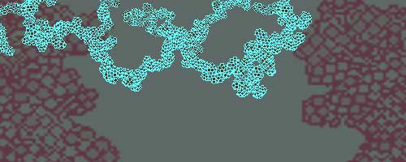
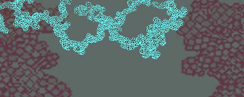

Manifesto for a Virtual Favela
|
|
Susan Otto on
Jan 1 2000 |
issue 15 |
The artists' role is as catalyst to transform everyday patterns of life from fixed to fluid, from deterministic to disruptive. Artists must continue to advocate implementation of the digital environment as terrain for research and development, political action and production. Our role is as interventionists into the geography of colonialism and fluctuating ideas about public space.
|
|
|
|
The crisis is real. A residential labyrinth spills from the base of a swelling urban center. Bodies in immediate proximity. Progress. Fortified from enemy attack by disorienting mazes of uncharted avenues and make shift dwellings. . Technology is produced with trash scraps and ingenuity. Ideas and hands. The architecture of chaos. Without a center for reference, each discrete point is understood only in relation to others - intersections, friction, and a hyperballad in concrete. The urban dwellers no longer locate meaning in maps of measured streets and asphalt paths. Logic has exploded so that infinite points are accessed at the exact moment of clinical specificity. X means "you are here" - wish you were here. The favela is a tragic spectacle.
Social space exists as a labyrinth of relationships between discrete moments and objects that produce culture.
This geographic and psychological space permits fresh actions to occur- both condoned and prohibited. Social space contains a great diversity of landscape and objects including pathways and networks that facilitate the exchange of matter and information. Such objects exist autonomously but also within a web of relations which ultimately disintegrates fetish matter into an unending mirage of references. These connections are what allow the fluctuation of signification. Cyberspace is public space.
Public space is architecture and zones of concepts, forms and ideology, whose abstract truth is imposed on the reality of the senses, bodies and desires. Distances are marked with objects and symbols, directions, prohibitions, warnings and traces of being lived in. Activity in a space is restricted by that space. Space enforces cultural structure and law because it implies order and intended use. Space commands and manipulates bodies and behaviors, routines, distances to be covered, navigated.
Mounting pressures at the intersections of public space erupt into crisis. At anxious junctures, narrative insistence, which shapes the dimensions and dynamics of an event, burdens it with the possibility of imminent consequence. This collision produces conflict and discussion and reinscribes meaning. The favela is a living contradiction.
The artists' role is as catalyst to transform everyday patterns of life from fixed to fluid, from deterministic to disruptive. Artists must continue to advocate implementation of the digital environment as terrain for research and development, political action and production. Our role is as interventionists into the geography of colonialism and fluctuating ideas about public space. Mass media and popular culture are viable means of dissemination of information and meaning. Ground zero. Interruption. Detour. Intervention. Bait. Representation produces meaning. All images and language are representations. The tyranny of representation. The representation of tyranny. Any dialogue with power is violence, suffered or provoked. We have ways of making you talk. The talking cure. Scouts and hunters in simultaneous frontiers. Temporary monuments in a fluctuating landscape of signification. Ideas at the level of spectacle. Experimental laboratories. Tokyo, Mexico City, Los Angeles. Silicon Valley, Dublin, Seoul.
==================
Susan Otto is currently an associate professor of new media at the CADRE Laboratory for New Media at San Jose State University.
|
| |
|
 |
|
 |
|

|
::CrossReference last 5 articles posted by Otto :: Manifesto for a Virtual Favela - Jan 1 2000
|

 
